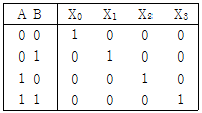
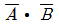
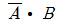
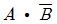
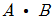
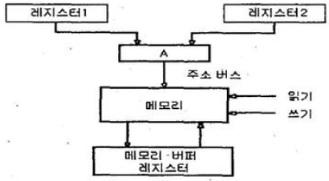
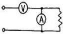
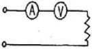
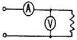
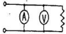

전자기기기능사 (2010-03-28 기출문제)
1과목: 전기전자공학
1. 효율이 가장 좋은 증폭(바이어스)방식은?
- A급
- B급
- C급
- AB급
(정답률: 82%)

2. 쌍안정 멀티바이브레이터에 대한 설명으로 적합하지 않은 것은?
- 구형파 발생회로이다.
- 2개의 트랜지스터가 동시에 ON 한다.
- 입력펄스 2개마다 1개의 출력펄스를 얻는 회로이다.
- 플립플롭 회로이다.
(정답률: 71%)
3. 부궤환 증폭기의 일반적인 특징으로 적합하지 않은 것은?
- 왜율이 감소한다.
- 이득이 감소한다.
- 안정도가 증가한다.
- 주파수 대역폭이 감소한다.
(정답률: 61%)
4. 주파수가 1[㎒]일 때 주기는?
- 0.01[㎲]
- 0.1[㎲]
- 1[㎲]
- 10[㎲]
(정답률: 64%)
5. 주파수가 100[㎒]인 반송파를 3[㎑]의 신호파로 FM변조했을 때 최대 주파수 편이가 ±15[㎑]이면 변조 지수는?
- 3
- 5
- 10
- 15
(정답률: 68%)
6. 5[㎌]의 콘덴서에 1[㎸]의 전압을 가할 때 축적되는 에너지는?
- 1[J]
- 2.5[J]
- 5[J]
- 10[J]
(정답률: 71%)
7. 저주파 증폭기에서 결합콘덴서의 용량이 부족할 때 나타나는 현상은?
- 진폭 일그러짐이 생긴다.
- 고역 주파수의 이득이 감쇠된다.
- 저역 주파수의 이득이 감쇠된다.
- 내부 변조 일그러짐이 생긴다.
(정답률: 45%)
8. 초크 입력형 평활회로에서 리플을 작게 하는 방법으로 가장 적합한 것은?
- C와 L을 작게 한다.
- C와 L을 크게 한다.
- C를 크게 하고, L을 작게 한다.
- C를 작게 하고, L을 크게 한다.
(정답률: 67%)
9. 입력전력이 2[㎽], 출력전력이 20[W]이면 이 증폭기의 전력이득은?
- 20[dB]
- 40[dB]
- 60[dB]
- 80[dB]
(정답률: 63%)
10. 연산증폭기의 정확도를 높이기 위한 조건으로 적합하지 않은 것은?
- 높은 안정도가 필요하다.
- 좋은 차단 특성을 가져야 한다.
- 증폭도는 가능한 한 작아야 한다.
- 많은 양의 부궤환을 안정하게 걸 수 있어야 한다.
(정답률: 80%)
11. 증폭기에서 잡음지수가 얼마일 때 가장 이상적인가?
- 0
- 1
- 10
- 무한대
(정답률: 80%)
12. 이미터 폴로워에 대한 설명으로 적합하지 않은 것은?
- 전압 증폭도가 약 1이다.
- 입력 임피던스가 낮다.
- 전류 증폭도가 1보다 훨씬 크다.
- 입ㆍ출력 전압의 위상은 동위상이다.
(정답률: 50%)
13. 다이오드를 사용한 정류회로에서 2개의 다이오드를 직렬로 연결하여 사용하면?
- 부하 출력의 리플전압이 커진다.
- 부하 출력의 리플전압이 줄어든다.
- 다이오드는 과전류로부터 보호된다.
- 다이오드는 과전압으로부터 보호된다.
(정답률: 53%)
14. 전력이 10[㎾]인 반송파를 변조도 80[%]로 진폭 변조했을 때, 양측파대 전력은?
- 1.6[㎾]
- 3.2[㎾]
- 6.4[㎾]
- 13.2[㎾]
(정답률: 39%)
15. 정격 전압에서 100[W]의 전력을 소비하는 전열기에, 정격 전압의 60[%] 전압을 가할 때의 소비 전력은?
- 36[W]
- 40[W]
- 50[W]
- 60[W]
(정답률: 57%)
2과목: 전자계산기일반
16. 동작이 빠르며 고주파 특성이 양호하여 초고속 스위칭 소자 및 마이크로파 발진소자로 쓰이는 것은?
- 제너 다이오드
- 터널 다이오드
- 바랙터 다이오드
- 포토 다이오드
(정답률: 60%)
17. 다음은 2 X 4 해독기의 진리표이다. X2의 값은?(단, A, B는 입력이다.)





(정답률: 64%)
18. 흐름도(flow chart)에 나타내는 것이 아닌 것은?
- 각종 연산 및 처리 기능 표시
- 데이터 입력 및 출력 표시
- 여러 개의 경로 중 한 경로의 선택 표시
- 디스플레이 장치 표시
(정답률: 68%)
19. 전자계산기의 특징에 속하지 않는 것은?
- 신속한 처리 속도
- 창의성
- 정확성
- 신뢰성
(정답률: 90%)
20. 흐름도(flow chart)를 작성하는 이유가 아닌 것은?
- 코딩하기가 쉽다.
- 논리적인 체계를 쉽게 이해할 수 있다.
- 프로그램 흐름을 쉽게 파악하여 수정을 용이하게 한다.
- 계산기의 내부 동작 상태를 쉽게 알 수 있다.
(정답률: 68%)
21. 8비트로 부호와 절대값 방법으로 표현된 수 42를 한 비트씩 좌우측으로 산술 시프트 하면?
- 좌측 시프트 : 42, 우측 시프트 : 42
- 좌측 시프트 : 84, 우측 시프트 : 42
- 좌측 시프트 : 42, 우측 시프트 : 21
- 좌측 시프트 : 84, 우측 시프트 : 21
(정답률: 78%)
22. 다음 언어 중 컴파일러 언어에 해당하는 것은?
- BASIC
- LISP
- APL
- C
(정답률: 73%)
23. 주소 지정방식 중 명령어의 피연산자 부분에 데이터의 값을 저장하는 방식은?
- 즉시 주소지정 방식
- 절대 주소지정 방식
- 상대 주소지정 방식
- 간접 주소지정 방식
(정답률: 60%)
24. 10진수 0은 ASCII 코드 0110000로 표현된다. 10진수 8을 ASCII 코드로 옳게 표현한 것은?
- 0111000
- 0111001
- 0101000
- 0001000
(정답률: 58%)
25. 주기억 장치에 기억된 프로그램을 읽고 해독한 후, 각 장치에 지시신호를 전달함으로써 프로그램에서 지시한 동작이 실행되도록 하는 것은?
- 입력장치
- 출력장치
- 연산장치
- 제어장치
(정답률: 77%)
26. 다음 그림은 주소 버스(address bus)를 이용한 메모리 전송을 나타낸 것이다. 그림에서 “A”가 나타내는 회로의 이름은?

- 디코더(decoder)
- 인코더(encoder)
- 멀티플렉서(multiplexer)
- 카운터(counter)
(정답률: 66%)
27. 메모리 내용을 보존하기 위해 일정 기간마다 재충전이 필요한 기억소자는?
- SRAM
- DRAM
- 마스크 ROM
- EPROM
(정답률: 74%)
28. 다음 기억공간 관리 중 고정 분할 할당과 동적 분할 할당으로 나누어 관리되는 기법은?
- 연속로딩기법
- 분산로딩기법
- 페이징(paging)
- 세그먼트(segment)
(정답률: 43%)
29. 주파수의 안정도와 파형이 좋기 때문에 저주파대의 기본 발진기로 사용되는 것은?
- RC 발진기
- 음차 발진기
- 수정 발진기
- 세라믹 발진기
(정답률: 45%)
30. 펄스 전압을 측정하는데 가장 적합한 계기는?
- VTVM
- 전위차계
- 오실로스코프
- 패턴발생기
(정답률: 74%)
3과목: 전자측정
31. 저항값을 측정하는 방법 중 중저항 1[Ω] ~ 1[㏁]을 측정하는 방법으로 가장 적합하지 않은 것은?
- 전류 전압계법
- 전위차계법
- 브리지법
- 저항계법
(정답률: 52%)
32. 전압, 전류에서의 직류와 교류의 측정값이 동일하고 상용 주파수 교류의 부표준기로 사용되는 계기는?
- 정전형
- 전류력계형
- 가동철편형
- 가동코일형
(정답률: 62%)
33. 3상 전력을 측정하는 방법으로 적합하지 않은 것은?
- 2 전력계법
- 3 전력계법
- 고주파 전력계법
- 멀티미터 전력계법
(정답률: 54%)
34. 표준신호발생기의 구비 조건으로 적합하지 않은 것은?
- 변조도의 가변 범위가 작아야 할 것
- 발진주파수가 정확하고 파형이 양호할 것
- 안정도가 높고 주파수의 가변 범위가 넓을 것
- 주변의 온도 및 습도 조건에 영향을 받지 않을 것
(정답률: 60%)
35. 계수형 주파수계로 측정한 결과 1[분]에 반복 회수가 7200번 이었을 때, 주파수는?
- 30[Hz]
- 60[Hz]
- 120[Hz]
- 240[Hz]
(정답률: 83%)
36. 전압계와 전류계의 연결 방법으로 가장 적합한 것은?(단, A는 전류계, V는 전압계)




(정답률: 77%)
37. A/D 변환의 순서로 옳은 것은?
- 표본화 → 양자화 → 부호화
- 양자화 → 표본화 → 부호화
- 표본화 → 양자화 → 복호화
- 표본화 → 부호화 → 양자화
(정답률: 83%)
38. 다음 중 휘스토운 브리지(Wheatstone bridge) 등을 사용하는 영위법은 어디에 속하는가?
- 직접 측정
- 간접 측정
- 절대 측정
- 비교 측정
(정답률: 43%)
39. 측정자의 부주의에 의하여 발생하는 것으로서 계산의 실수, 측정기의 눈금 오판독 등에 의하여 발생하는 오차는?
- 계통오차
- 우연오차
- 과실오차
- 계기로 인한 오차
(정답률: 69%)
40. 지시계기의 3대 요소에 해당하지 않는 것은?
- 구동장치
- 제어장치
- 제동장치
- 증폭장치
(정답률: 84%)
41. 온도의 예정 한도를 검출하는데 사용되는 것은?
- 레벨미터(level meter)
- 서모스태트(thermostat)
- 리밋스위치(limit switch)
- 압력스위치(pressure switch)
(정답률: 67%)
42. VHS 방식 VTR의 설명으로 옳은 것은?
- 병렬(parallel) 로딩 기구에 의한 M자형 로딩
- 큰 헤드 드럼에 낮은 테이프 속도
- 리드 테이프에 의한 종단 검출 방식
- 1모터에 의한 안정된 구동 방식
(정답률: 53%)
43. 중음 재생을 전용으로 하는 스피커는?
- 우퍼(woofer)
- 스코커(squawker)
- 트위터(tweeter)
- 혼스피커
(정답률: 59%)
44. 자기 녹음기에서 바이어스 전류를 적당한 세기의 값으로 선택하지 못하는 경우 발생하는 현상은?
- 직선 부분을 길게 잡을 수 있다.
- 교류 자화로 인한 잡음이 많다.
- 녹음이 전혀 되지 않는다.
- 녹음 파형이 일그러진다.
(정답률: 71%)
45. 오디오의 재생 주파수 대역을 몇 개의 대역으로 나누어 각각의 대역내의 주파수 특성을 자유자재로 바꿀 수 있는 기능은?
- 믹싱 앰프
- 채널 디바이더
- 그래픽 이퀄라이저
- 라우드니스 컨트롤
(정답률: 66%)
4과목: 전자기기 및 음향영상기기
46. 고주파 가열 중 유전가열에 대한 설명으로 거리가 먼 것은?
- 가열이 골고루 된다.
- 온도 상승이 빠르다.
- 피가열물의 모양에 제한을 받지 않는다.
- 내부가열이므로 표면 손상이 되지 않는다.
(정답률: 63%)
47. 청력을 검사하기 위하여 가청주파수 영역의 여러 가지 레벨의 순음을 전기적으로 발생하는 음향발생 장치는?
- 오디오미터
- 페이스메이커
- 망막전도 측정기
- 심음계
(정답률: 83%)
48. 선박에 이용되며 방향 탐지기가 없이 보통 라디오 수신기를 이용하여 방위를 측정할 수 있는 것은?
- 회전 비컨
- 무지향성 비컨
- AN 레인지 비컨
- 초고주파 전방향성 비컨
(정답률: 64%)
49. 제어량의 변화를 일으킬 수 있는 신호 중에서 기준 입력 신호 이외의 것은?
- 제어동작 신호
- 외란
- 주되먹임 신호
- 제어 편차
(정답률: 78%)
50. FM 수신기에 필요한 요소가 아닌 것은?
- 저주파증폭회로
- 주파수판별회로
- 변조회로
- 주파수혼합회로
(정답률: 55%)
51. 펠티어 효과는 어떤 장치에 이용되는가?
- 자동제어
- 온도제어
- 전자냉동기
- 태양전지
(정답률: 85%)
52. 다음 중 음압의 단위는?
- [N/C]
- [dB]
- [µbar]
- [Neper]
(정답률: 84%)
53. FM 수신기에서 스켈치(squelch) 회로의 사용 목적은?
- 입력 신호가 없을 때 수신기 내부 잡음을 제거한다.
- FM 전파 수신시 수신기 내부 잡음을 증폭한다.
- 국부발진 주파수의 변동을 막는다.
- 안테나로부터 불필요한 복사를 제거한다.
(정답률: 53%)
54. 반도체의 성질을 가지고 있는 물질(형광체를 포함)에 전장을 가하였을 때 생기는 현상은?
- 광전효과
- 줄효과
- 전장발광
- 톰슨효과
(정답률: 71%)
55. 압력을 변위로 변화시키는 변환기는?
- 전자석
- 전자코일
- 스프링
- 차동변압기
(정답률: 79%)
56. 프로세스 제어(process control)는 어느 제어에 속하는가?
- 추치 제어
- 속도 제어
- 정치 제어
- 프로그램 제어
(정답률: 63%)
57. VTR의 기록방식에서 기록 헤드와 재생 헤드의 갭을 ⏀도 만큼 기울여 재생할 때의 장점은?
- 장시간 기록, 재생된다.
- 테이프 속도가 증가한다.
- 테이프를 좁게 사용할 수 있다.
- 휘도 신호의 크로스토크가 제거된다.
(정답률: 57%)
58. 다음 중 소나(sonar)와 관계없는 것은?
- 수중 레이더
- 어군 탐지기
- 물의 깊이와 수위
- 물속에 녹아 있는 염분의 농도측정
(정답률: 81%)
59. 전기식 조절계에서 가장 많이 사용되는 방식은?
- 비례동작
- 온ㆍ오프동작
- 비례적분동작
- 비례적분미분동작
(정답률: 65%)
60. TV 수상기의 영상 증폭회로에서 피킹 코일에 관한 설명으로 옳은 것은?
- 수직의 동기를 제거한다.
- 고역주파수 특성을 보상한다.
- 저역주파수 특성을 보상한다.
- 4.5[㎒]의 음성신호를 제거한다.
(정답률: 56%)